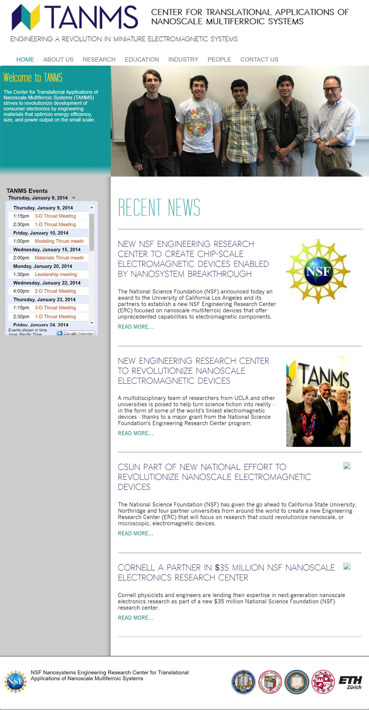

TANMS Engineering Research Center

TANMS is an engineering research center researching magnetism on the small scale. This site was built from scratch using HTML, CSS, and JavaScript to present news, research materials, and upcoming organization events.
SKILLS USED: HTML, CSS, JavaScript